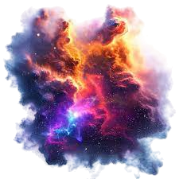

Introdução
As nebulosas são imensas nuvens de gás e poeira cósmica no espaço, muitas vezes berçários de estrelas. Podem ter formas e cores impressionantes, resultado da interação entre diferentes elementos e radiações. Algumas nebulosas formam-se a partir da explosão de estrelas, como as supernovas, enquanto outras são regiões onde novas estrelas estão a nascer.
